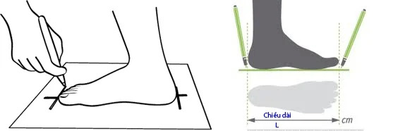
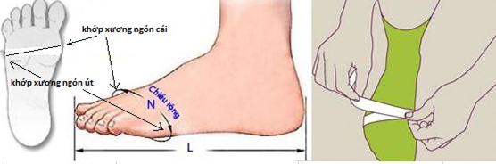

Bước 1: Đặt bàn chân lên tờ giấy trắng, rồi dùng bút vẽ bo hết bàn chân (để chính xác thì bạn phải đặt bút thẳng đứng và vuông góc với tờ giấy)
Bước 2: Dùng thước hay sợi dây đo một vòng khớp ngón phần rộng nhất của bàn chân ở tư thế ngồi hoặc đứng thẳng 2 chân.
So sánh bảng dưới đây để biết size giày của bạn nhé!
| SIZE | Chiều dài bàn chân |
Vòng khớp ngón (Đo ở tư thế ngồi ghế) |
Vòng khớp ngón (Đo ở tư thế đứng thẳng 2 chân) |
| 34 | 21.2 | 20.45 | 20.65 |
| 35 | 21.9 | 20.95 | 20.15 |
| 36 | 22.5 | 21.4 | 21.6 |
| 37 | 23.2 | 21.9 | 22.1 |
| 38 | 23.9 | 22.4 | 22.6 |
| 39 | 24.5 | 22.85 | 23 |
| 40 | 25.2 | 23.35 | 23.55 |